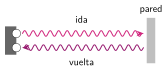
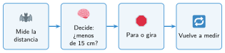

Programar los sensores
🤔 Pienso5 min
Qué hago aquí: Piensa un momento y contesta con lo que ya sabes. No pasa nada si no lo sabes: es para empezar.
Conecta el sensor de ultrasonidos en J1. Añade la extensión PlanetX. Muestra la distancia en la pantalla. Acerca la mano. ¿Qué números salen?
📖 Leo y aprendo10 min
Qué hago aquí: Lee despacio, mira los dibujos y los ejemplos, y quédate con la idea clave del final.
Con sensores, el robot comprueba lo que pasa y reacciona. Es un lazo cerrado.


✏️ Hago30 min
Qué hago aquí: Haz las actividades en orden. Empieza siempre por las básicas.
Une cada sensor con lo que mide.
| Ultrasonidos • | • Si hay línea negra |
| Seguidor de línea • | • La distancia |
Mide con el sensor la distancia a la pared desde dos puntos. Mide también con una regla.
| Sensor (cm) | Regla (cm) | |
|---|---|---|
| Punto 1 | ||
| Punto 2 |
Copia el programa del ejemplo y pruébalo. Cambia 15 por 30. ¿Qué cambia?
Completa qué hace un robot con dos sensores de línea.
| Izquierdo | Derecho | El robot... |
|---|---|---|
| ve la línea | ve la línea | avanza |
| ve la línea | no la ve | |
| no la ve | ve la línea | |
| no la ve | no la ve |
🚀 Amplío (si quieres saber más)
Qué hago aquí: ¿Has terminado? Lee la curiosidad o elige el reto. Es voluntario.
Mejora el programa: cuando encuentre un obstáculo, el robot retrocede, gira y sigue avanzando. Puedes mirar el Paso a paso del final de la unidad.
✅ Compruebo5 min
Qué hago aquí: Contesta sin mirar la ficha y marca cómo lo llevas.